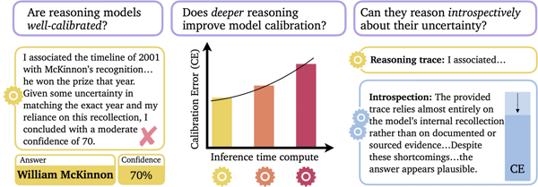
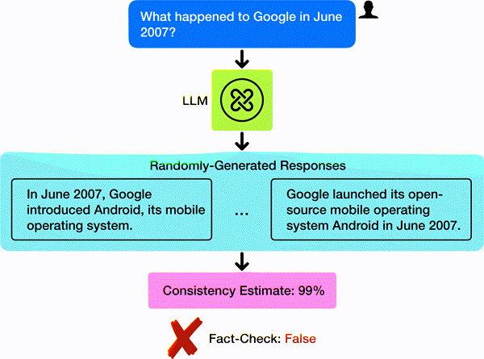
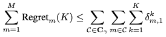

Justin Lidard
I am a Research Scientist at Google DeepMind, where I build generally capable robots that act safely in the real world. I currently focus on training robot policies from video data.
I recently completed my PhD at Princeton, where I worked with Anirudha Majumdar and Naomi Leonard on robotics. During my PhD, I worked on RL for diffusion policies, safety filters, and dynamic games. Along the way, I spent time at the Toyota Research Institute working on human-interactive driving, and at Google DeepMind with Vikas Sindhwani.
G. Scholar
Github
LinkedIn

Reasoning About Uncertainty: Do Reasoning Models Know When They Don't Know?
Zhiting Mei, Christina Zhang, Tenny Yin, Justin Lidard, Ola Shorinwa, Anirudha Majumdar
Findings of the Association for Computational Linguistics (EACL) 2026
TL;DR: We introduce a benchmark testing whether reasoning models know what they don't know, and find that longer chains of reasoning tend to make them more overconfident.
Webpage •
PDF
Safety with Agency: Human-Centered Safety Filter with Application to AI-Assisted Motorsports
Donggeon David Oh, Justin Lidard, Haimin Hu, Himani Sinhmar, Elle Lazarski, Deepak Gopinath, Emily Sumner, Jonathan DeCastro, Guy Rosman, Naomi Leonard, Jaime Fernández Fisac
Robotics: Science and Systems (RSS) 2025
TL;DR: We introduce a neural safety filter that overrides a human driver as little as possible while still keeping them safe, validated in AI-assisted racing.
Webpage •
PDF
Diffusion Policy Policy Optimization
Allen Z. Ren, Justin Lidard, Lars L. Ankile, Anthony Simeonov, Pulkit Agrawal, Anirudha Majumdar, Benjamin Burchfiel, Hongkai Dai, Max Simchowitz
International Conference on Learning Representations (ICLR) 2025
TL;DR: We introduce DPPO, which fine-tunes diffusion policies with policy gradients to reach state-of-the-art performance on robot manipulation.
Webpage •
PDF •
Code
Guiding Data Collection via Factored Scaling Curves
Lihan Zha, Apurva Badithela, Michael Zhang, Justin Lidard, Jeremy Bao, Emily Zhou, David Snyder, Allen Z. Ren, Dhruv Shah, Anirudha Majumdar
arXiv preprint, 2025
TL;DR: We introduce factored scaling curves that predict how much each environment factor limits a policy, showing where to spend a data-collection budget.
Webpage •
PDF •
Code •
Video

A Survey on Uncertainty Quantification of Large Language Models: Taxonomy, Open Research Challenges, and Future Directions
Ola Shorinwa, Zhiting Mei, Justin Lidard, Allen Z. Ren, Anirudha Majumdar
ACM Computing Surveys, 2025
TL;DR: We survey the landscape of uncertainty quantification for large language models and organize it into a single taxonomy.
PDF
Blending Data-Driven Priors in Dynamic Games
Justin Lidard, Haimin Hu, Asher Hancock, Zixu Zhang, Albert Gimó Contreras, Vikash Modi, Jonathan DeCastro, Deepak Gopinath, Guy Rosman, Naomi Leonard, María Santos, Jaime Fernández Fisac
Robotics: Science and Systems (RSS) 2024
TL;DR: We introduce KLGame, a dynamic game that pulls a learned reference policy toward game-theoretic equilibria to capture how people actually drive.
Webpage •
PDF •
Code
Risk-Calibrated Human-Robot Interaction via Set-Valued Intent Prediction
Justin Lidard, Hang Pham, Ariel Bachman, Bryan Boateng, Anirudha Majumdar
Robotics: Science and Systems (RSS) 2024
TL;DR: We introduce RCIP, which predicts a calibrated set of plausible human intents so a robot knows when to act and when to ask for help.
Webpage •
PDF •
Code

Provably Efficient Multi-Agent Reinforcement Learning with Fully Decentralized Communication
Justin Lidard, Udari Madhushani, Naomi Ehrich Leonard
American Control Conference (ACC) 2022
TL;DR: We introduce a decentralized multi-agent RL algorithm where agents share information only with neighbors, and prove it converges faster as the group grows.
PDF •
IEEE
2026
Joined Google DeepMind as a Research Scientist!2025
Started as a Student Researcher at Google DeepMind, working on whole-body control.2022
Awarded the NSF Graduate Research Fellowship.2020
Fortunate to be awarded the National Defense Science & Engineering Graduate Fellowship (NDSEG) and the NASA Space Technology Research Fellowship (NSTRF).